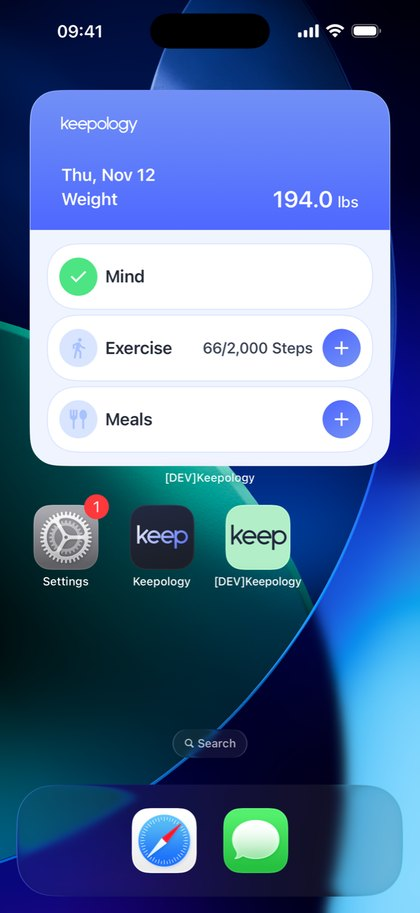
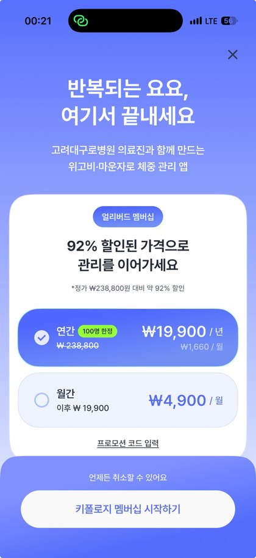
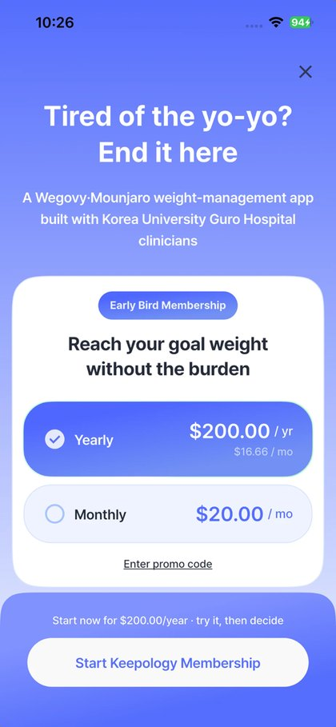
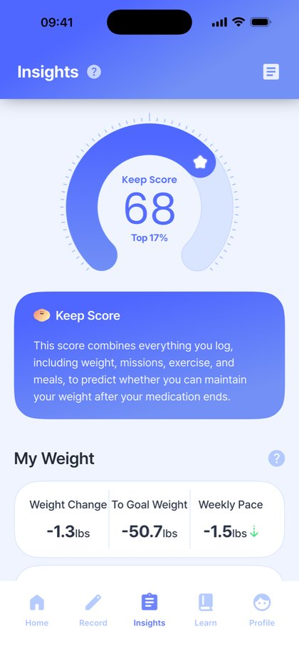

- 기간
- 2025.10 ~ 진행 중
- 회사
- (주)이삼사일
- 플랫폼
- iOS, Android
- 서비스
- 한국, 미국
- 언어
- 한국어, 영어
- 팀 구성
- 클라이언트 1명(본인, 앱과 웹), 백엔드 1명, 기획 1명, 디자인 1명. 백엔드 API 개발에도 일부 참여
주요 기능

다국어화



고민한 점
빠른 출시를 위한 선택
초기에는 시장에 빨리 내놓고, 피드백을 받아 개선하는 루프를 돌리는 것이 가장 중요했습니다. 그래서 기능마다 직접 만들지(Build), 검증된 서비스를 쓸지(Buy), 구조는 어디까지 나눌지를 출시 속도를 기준으로 판단했습니다.
- 인앱결제
- in_app_purchase 직접 구현 vs RevenueCat직접 구현하면 영수증 검증과 구독 상태 관리를 서버에서 새로 만들어야 했습니다. 서버 개발 공수를 고려하여 RevenueCat을 선택했습니다.
- 아키텍처
- 클린 아키텍처 vs MVVM + repositorydomain 계층과 usecase까지 나누는 클린 아키텍처는 검증 전 초기 단계에서 오버엔지니어링이고 무겁다고 판단했습니다. MVVM 구조에 repository 계층만 얹어 시작했고, 화면이 늘어난 뒤에는 문제가 드러난 곳부터 구조를 정리했습니다.
- 결과
- 2026년 3월 한국, 6월 미국 App Store에 출시했고, 11월 현재 1.3.2까지 업데이트하며 개선하고 있습니다.
MVP 기획 단계에서 제안한 건강 데이터 연동
초기 앱 기획과 MVP 개발 당시, 운동 기록에 워치 건강 데이터를 써야 한다고 제안했습니다.
- 제안
- 운동을 매번 손으로 입력해야 하는 구조는 사용자에게 불편하다고 봤습니다. 핏버디에서 워치 건강 데이터를 연동해 본 경험을 근거로 필요성을 설명했습니다.
- 논의
- 수기 입력에 더해 플랫폼별 건강 데이터 연동기획자, 디자이너와 논의 끝에 iOS는 HealthKit, Android는 Health Connect에서 걸음 수와 운동 기록을 가져오기로 했습니다. 앱을 열거나 다시 돌아올 때마다 자동으로 동기화하고, 기록이 누락되지 않도록 서버의 기록일을 기준(SSoT)으로 맞춥니다.
- 결과
- 워치나 휴대폰으로 운동하면 따로 입력하지 않아도 기록과 미션에 반영됩니다.
화면 재사용을 막던 의존성 정리
캘린더에서 날짜를 고르면 그날의 기록을 기록 탭과 같은 모양으로 보여줘야 했습니다. 그런데 기록 탭의 섹션 컴포넌트들이 오늘 기록을 담은 provider를 안에서 직접 구독하고 있어, 다른 날짜에는 그대로 쓸 수 없었습니다.
- 문제
- 그래서 일별 상세 화면에는 식사, 운동, 건강, 일기, 투약 섹션이 따로 복제돼 1,283줄이 됐고, 기록 탭을 고치면 상세 화면도 따로 고쳐야 했습니다.
- 판단
- 컴포넌트가 데이터를 직접 가져오기 vs 화면이 넘겨주기섹션 컴포넌트가 provider를 읽지 않고 날짜와 기록 데이터를 생성자로 받도록 바꿨습니다. 데이터를 어디서 가져올지는 화면이 정합니다. 기록 탭은 오늘 기록을, 캘린더는 날짜별 상세 기록을 넘깁니다.
- 결과
- 일별 상세 화면이 1,283줄에서 188줄로 줄었고, 두 화면이 같은 섹션 컴포넌트를 공유해 한 곳만 고치면 됩니다.
해결한 문제
카메라를 켜면 앱이 종료되던 크래시, 당일 핫픽스
- 문제
- 식사 사진은 이미지 피커 대신 camera 패키지로 카메라 화면을 직접 구현했는데, 카메라를 켜면 앱이 종료되는 크래시가 발생했습니다. 식사 기록을 막는 큰 이슈였습니다.
- 원인
- Crashlytics에서 스택 트레이스와 사용자 기기 정보, 크래시 직전 상황을 확인해 iPhone 17 Pro에서 발생한다는 것을 파악했고, camera 패키지의 관련 이슈를 리서치해 해상도 프리셋(max)이 원인이라는 것을 좁혔습니다.
- 해결
- iOS는 ultraHigh, Android는 max로 해상도 설정을 나눠 당일 핫픽스로 배포했습니다.
AI 활용
AI가 만든 코드를 그대로 쓰지 않기
Claude Code로 구현 속도를 높이되, 결과물은 컨벤션과 실제 동작을 직접 확인한 뒤 반영했습니다.
- 컨벤션
- Figma MCP를 쓸 때는 훅으로 DESIGN.md를 먼저 읽게 해서, AI가 만든 UI 코드도 디자인 시스템의 색상 토큰과 컴포넌트 규칙을 따르게 했습니다.
- 검증
- 직접 만든 Keepology 웹 랜딩 페이지에 Figma MCP로 받은 에셋을 넣었을 때, 빌드는 통과했지만 부모 프레임 배경이 딸려와 로고 뒤에 흰 사각형이 보였습니다. 화면에서 직접 확인해 바로잡았고, 이후 에셋을 넣기 전에 투명도와 실제 배경 위 모습을 확인하는 단계를 넣었습니다.
- 판단
- 홈 위젯의 운동 완료 표시를 AI는 앱에서 운동 기록을 직접 세는 방식으로 제안했지만, 서버가 내려주는 완료 판정을 그대로 쓰게 해 판정을 서버 한 곳에서만 하도록 했습니다.
- 재발 방지
- 반복된 실수는 CLAUDE.md와 스킬 규칙으로 남겼습니다. 예를 들어 리뷰 지적을 고치기 전에 재현 테스트로 실패부터 확인하게 했습니다. 리뷰 스킬을 만들어 AI가 먼저 점검하게 하고, 최종 리뷰와 반영 여부는 직접 판단합니다. 결정 사항은 팀 위키에 기록합니다.
주요 구현
- dev, prod 빌드 분리flavor별로 앱 ID, 앱 이름, Firebase 프로젝트, 딥링크 스킴을 나눠 두 앱을 한 기기에서 함께 QA
- CI/CDGitHub Actions + fastlane으로 PR마다 정적 분석과 코드 생성 검사, TestFlight와 Play 내부 테스트 자동 배포
- 회귀 테스트결제, 로그인처럼 깨지면 매출에 바로 영향을 주는 흐름을 회귀 테스트로 고정하고, PR마다 CI에서 자동 실행해 머지 전에 차단
- 글로벌 출시kg/lb 지원. 스토어 계정 국가에 따라 결제와 로그인 수단 분리
- 인앱결제구독 결제와 구매 복원. 비구독, 체험, 유료 등급별 기능 잠금을 서버 SSoT 기준으로 처리
- 홈 위젯기록 화면에 바로 들어갈 수 있게 제안해 구현. iOS는 WidgetKit, Android는 Glance로 만들고, 네 영역을 누르면 딥링크로 체중, 운동, 식사 등 해당 기록 화면을 바로 열기
- Crashlytics 모니터링화면, 비동기, Isolate 오류를 모두 수집. 사용자 ID를 결제, 분석과 같은 값으로 묶어 원인 추적, iOS dSYM 자동 업로드
- 웹 페이지서비스 랜딩 페이지(keepology.ai)와 회사 웹사이트(twothreefour.one)도 직접 개발
사용 기술
- Flutter
- Riverpod
- go_router
- Dio
- Retrofit
- Freezed
- RevenueCat
- Firebase (Crashlytics, Analytics, FCM)
- GitHub Actions
- fastlane